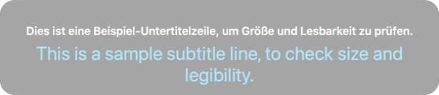
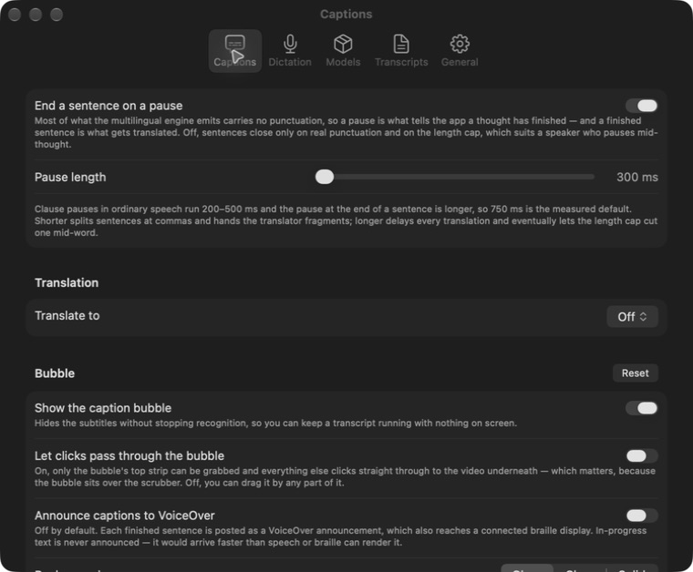
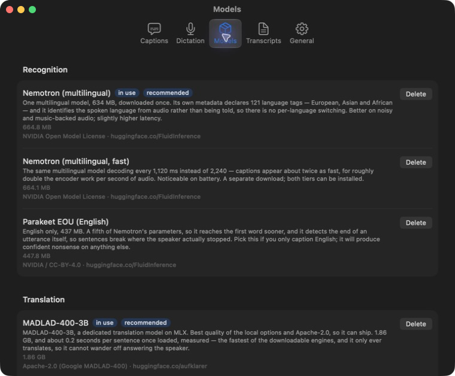
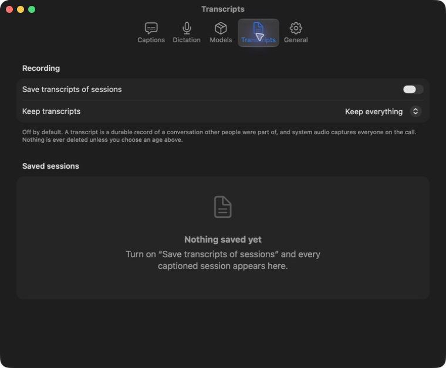
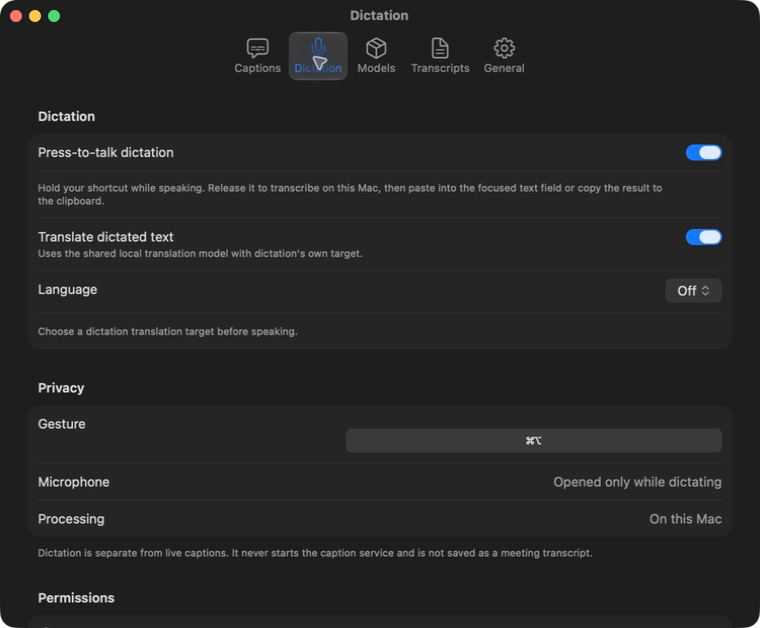

Captions
Speech from your Mac's system audio becomes stable captions in a small, movable bubble. Recognition runs on the Mac.
sAiity for Mac
Live captions, translation, transcripts, and press-to-talk dictation for macOS.
macOS 26 or later Apple Silicon Windows not supported
Recognition and translation happen locally, then appear where you need them: in a small caption bubble, a saved transcript, or the field you are writing in.





Speech from your Mac's system audio becomes stable captions in a small, movable bubble. Recognition runs on the Mac.
Add a second line in another language with a local translation model while keeping the original speech available.
Hold a configurable key, speak, and release. The result goes into the focused field when possible and always remains on the clipboard.
Save original and translated sessions in the app, then read them later or export SRT, WebVTT, Markdown, or plain text.
Local by default
There is no account, tracking, telemetry, or audio upload. Models run on-device after download. The captions microphone is optional; dictation opens it only while the press-to-talk key is held.
Current release
GitHub Releases is the canonical download location. Sparkle checks the signed feed only when you enable updates.